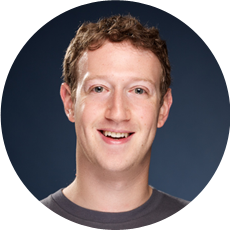

Mark Zuckerberg
Co-founder and CEO of Meta Platforms
Facebook, Instagram, Whatsapp
QUOTES
“Ideas don’t come out fully formed , they only become clearer as you work on them.
You just have to get started."
Reference: CatClifford (2017) (Accessed: October 25, 2022)
QUICK FACTS
Mark Elliot Zuckerberg
May 14, 1984 (age 38)
Phillips Exeter Academy, Harvard University
White Plains, New York
Early Life
Mark Zuckerberg was born in White Plains, New York in May 1984. He is one of the four children
and
the only son of Karen and Edward Zuckerberg. His mother is a psychiatrist while his father is a
dentist. Mark was really into computers and he developed an interest in computer programming
since
early age. He built a message network for his father’s dentist office called Zucknet so that the
receptionist could inform his dad of a new patient through the messaging program. (Mark Zuckerberg, 2019)
Education
Mark is a model student who attended Philips Exeter College. He also earned several prizes in
science and classical studies in his junior year. After graduating from Exeter in 2002, Mark
gets enrolled in Harvard for the class of 2006 pursuing degrees in psychology and computer
science. Mark always wanted to connect with people, his goal was to create a community to bring
more people closer together. During his time at Harvard, he created a website called Facemash
which allowed students to share and rate photos. It was shut down by the university but it
inspired him to create Facebook. (Mark Zuckerberg, 2019)
Founding Facebook
In February 2004, Zuckerberg launched “The Facebook” from his college dormitory with his college
roommates. At first their service was limited only to Harvard but later Zuckerberg decided to
expand
it to other schools. During his sophomore year in May 2004, Mark Zuckerberg dropped out of
Harvard
and relocated to Silicon Valley to complete his Facebook project. Mark stated the mission of
Facebook is to make the world open and connected.
At his age of 23, he became the world’s youngest self-made billionaire. In July 2010,
Zuckerberg
announced that the number of active users on the app has reached 500 million. He then was ranked
first on vanity fair’s list of the top 100 “Most Influential people of the information age”. In
October 2012, their number of active users has doubled to one billion-user milestone. (Mark
Zuckerberg, 2019)
Contributions
Facebook acquired the photo and video sharing social media platform Instagram in 2012. Two years
later, the company acquired the mobile messaging app, Whatsapp. Today, Facebook is the most
widely
used social media platform. More than two billion people are Facebook users, roughly 37% of the
world's population. People from different countries are able to connect without meeting each
other.
This platform just provides people a voice and a place to become friends. It also helps
businesses
to build brands and engage with customers. (Downey.L 2022)